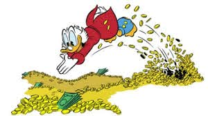

 Geld hebben is handig Het hebben van voldoende kapitaal en geld zorgt ervoor dat je de touwtjes zelf in handen hebt. Geen last meer van een veeleisende werkgever, omdat je van het geld goed kunt leven. Het geeft je de mogelijkheid om leuke dingen te doen, wanneer jij dat maar wilt. Het geeft je dus veel vrijheid, waardoor je je niet meer aan anderen hoeft te storen. Wat jij wenst kun jij gedaan krijgen. Geld hebben is dus altijd handig. Maar het hebben van veel geld is uiteraard niet alles, omdat er meer dingen in het leven zijn dan rijkdom alleen. Welke aspecten van het leven geven een belangrijke invulling aan de mens? Is men gelukkig? Ontzettend rijk zijn wil niet betekenen dat men gelukkig is. Anderen die het minder hebben zitten namelijk altijd op jou te azen, omdat je veel te besteden hebt. Heb je een liefde dan is het altijd de vraag of het voortkomt uit de liefde zelf of juist de liefde voor het geld. Het kan de mate van gelukkigheid behoorlijk beïnvloeden. Daarnaast krijgt men te maken met personen die altijd iets van je willen, oftewel geld. Rijkdom is dus een relatief begrip. Uiteraard zijn er velen die veel geld en geluk hebben in een woord noemen, echter in werkelijkheid hoeft dat dus niet zo te zijn. Afgunst en jaloezie kunnen daarbij een grote impact op het leven hebben, waarnaast zelfs eenzaamheid aan de top voorkomt. Met alle gemakken om je heen kun je je dus aardig ongemakkelijk voelen. Hoe zit het met de gezondheid? Als je al het geld in de wereld bezit, echter je bent doodziek dan koop je daar weinig voor. Je kunt mogelijk het geld aanwenden om een alternatieve geneesmethode te kopen, echter dermate ziek zijn is voor iedereen verschrikkelijk. Je koopt ongetwijfeld de beste behandelmethode beschikbaar, echter als je gezondheid er niet mee wordt geholpen dan schiet je er dus niets mee op. Je zou al het geld dat je hebt zo willen omwisselen voor een goede gezondheid. Dit is de primaire relativiteit van het rijk zijn. Ok, heb je blakende gezondheid dan kun je van het leven genieten, maar het kan ook zo tot een einde komen. We zijn als Nederlander relatief rijk! Op zich hebben we het in ons landje niet zo slecht allemaal. Vele regelingen vanuit de overheid hebben ervoor gezorgd dat alles goed wordt geregeld. Worden we ziek dan is er de ziektekostenverzekering. Daarnaast heeft iedereen recht op minimaal inkomen, zodat in de eerste levensbehoeften kan worden voorzien. In andere landen zoals in de Sahel komt men om van de honger of door het uitblijven van juiste of tijdige behandeling. Wat dat betreft is het hier allemaal goed geregeld en dat vergeten we vaak nog wel eens. Tip om vermogen voor later te krijgen! Ga er maar vanuit dat je niet zomaar rijk kunt worden. Enige manier is dat je er zelf iets aan doet. Je kunt zelf bruto geld apart leggen, zodat je optimaal van fiscale regelingen gebruik maakt. Denk aan een banksparen rekening. Je hoeft dus geen belasting af te dragen, waardoor je direct veel over dat bedrag bespaart. Daarnaast worden rentevergoedingen eveneens niet belast. Je kunt het laten uitkering bij de pensioengerechtigde leeftijd, zodat je meer geld hebt te spenderen. Zo kun je zelf werken aan een leuk zakcentje voor later. Het geeft je de mogelijkheid om vanuit je inkomen toch een klein vermogen bijeen te krijgen. Wat als je de loterij wint? Stel je voor dat het een keer voorkomt dat je een loterij wint. Het kan om aardige bedragen gaan, maar we gaan er even niet vanuit dat je de jackpot krijgt. Een ton of twee daar kun je uiteraard al erg veel mee. Win je zoveel geld dan is het de vraag wat je daarmee gaat doen. Een auto aankopen, verre reizen doen en dure kleren zorgen ervoor dat het geld binnen een kort tijdsbestek is verbruikt. Je hebt even in weelde geleefd, maar je bent het ook zo weer kwijt. Het is in dat geval voor jou de vraag om te beslissen wat belangrijker is. Wil je het kleine vermogen compleet of deels direct gebruiken of doe je er iets anders mee. Het kleine vermogen kun je ook opzij zetten in bijvoorbeeld een lijfrentepolis, zodat het met de tijd groeit. Het geeft je de mogelijkheid om een aardig zakcentje te hebben als je met pensioen gaat of dat je eerder stopt met werken. Doe je voordeel dus! Geld kun je niet meenemen na je overlijden Mensen die rijk of heel arm zijn, zijn allemaal gelijk aan elkaar. Op het moment dat men sterft heeft men niets meer aan alle weelde dat men om zich heeft verzameld. Objecten en geld kan men simpelweg niet meenemen. Het enige geruststellende kan zijn dat de nabestaanden in relatieve weelde worden achtergelaten, zodat het hen aan niets ontbreekt. maar geld hebben blijft fijn dus hier de drie rijkste mannen op aarde.